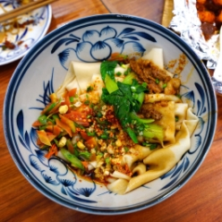
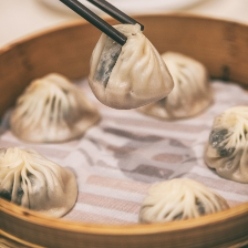
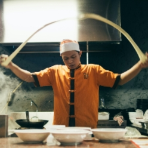
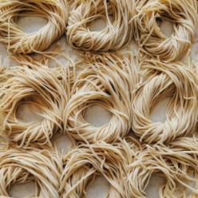
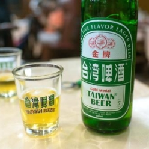
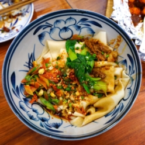
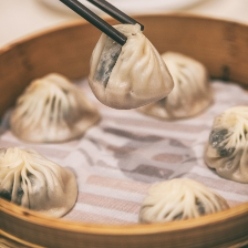
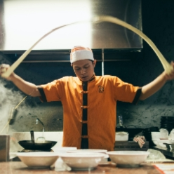
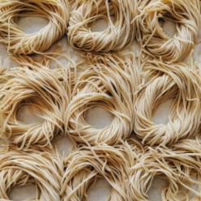
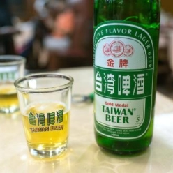

Yummy Noodle
185 rue de Lancry75010 Paris
Les nouilles les plus Yummy de tout Paris
Click & Collect


Depuis près de 10 ans maintenant, nous partageons avec vous les meilleures recettes. Nos plats ont tous été conçus, et affinés au fil des années et des goûts. Nous vous apportons le meilleur de l'Asie de l'Est en plein coeur de Paris. Chaque année, nous reprenons tous nos plats pour les améliorer, les modifier et qu'ils vous plaisent toujours plus. Nous espérons que vous vous régalerez en dégustant nos plats.
 








